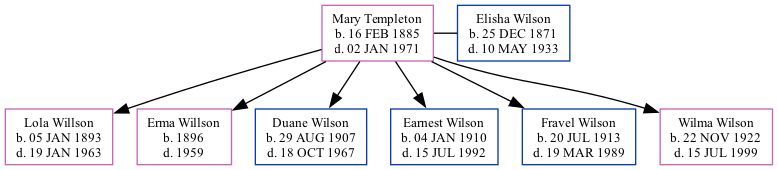

Mary Etta Wilson (née Templeton) 1885 - 1971
[ Home ] | [ Surnames Index ] | [ Family History ] was born in Severy, Elk, Kansas, USA on Feb 16, 18851,2 and married Elisha Wilson (with whom she had 6 children: Lola, Erma, Duane Templeton, Earnest D, Fravel Victor and Wilma Iona) in Chitwood, Missouri on May 27, 1906.
During her life, she was living in Shoal Creek, Newton, Missouri in 19101; and in Beaver, Washington, Colorado in 19302.
She died on Jan 2, 1971 in Longmont, Boulder, Colorado, USA.
Children
- Lola was born on Jan 5, 1893
- Erma was born in 1896
- Duane Templeton was born on Aug 29, 1907
- Earnest D was born on Jan 4, 1910
- Fravel Victor was born on Jul 20, 1913
- Wilma Iona was born on Nov 22, 1922
Citations
- 1910 United States Federal Census Ancestry.com Operations Inc (Age in 1910: 25; Marital Status: Married; Relation to Head of House: Wife)
- 1930 United States Federal Census Ancestry.com Operations Inc (Age: 45; Marital Status: Married; Relation to Head of House: Wife)
Family Tree
Data (GEDCOM) maintained by Jay Weston Hannah, Omaha, Nebraska, USA.
Website generated by ged2site. Last updated on Jun 18, 2024.